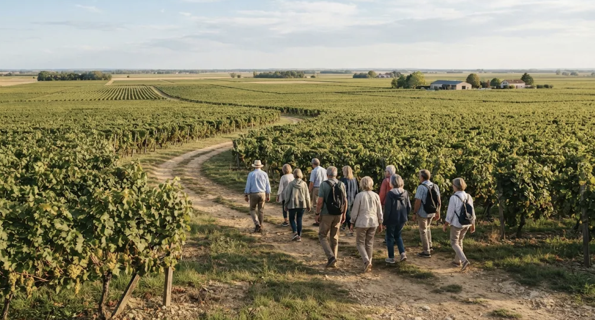
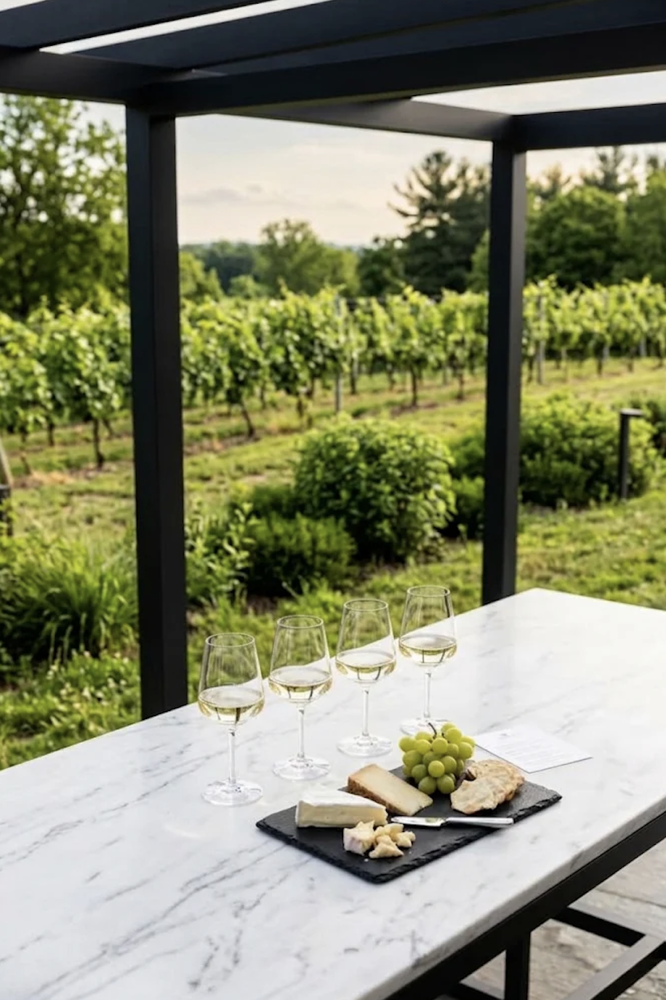

La experiencia
Un día entre viñedos, relatos y copas
El recorrido combina enoturismo con turismo cultural y rural: fincas en producción, bodegas familiares, degustaciones guiadas y el paisaje de Tierra de Palmares.

El recorrido
Cómo transcurre la jornada
Itinerario orientativo de la modalidad Premium. La versión Básico abarca media jornada, con dos paradas, degustación guiada y fotógrafo a bordo.

09:00
Salida desde Colón
Encuentro en el centro de la ciudad y presentación del guía y del fotógrafo a bordo.
09:45
Primera finca
Caminata entre hileras de vides y relato del origen inmigrante de la vitivinicultura colonense.
11:30
Degustación guiada
Copas de vinos locales con la explicación de la elaboración y los sabores de la vid.
13:00
Maridaje regional
Almuerzo con gastronomía entrerriana pensado para acompañar cada vino.
15:30
Segunda bodega
Recorrido por el lagar y nueva degustación junto a quienes elaboran el vino.
17:00
Clase de fotografía
Luz de atardecer sobre el viñedo: encuadre, composición y retrato del paisaje.
18:30
Regreso
Vuelta a Colón con el álbum digital de la experiencia en camino.
Cultura y paisaje
Los sabores de la vid y el relato de la vendimia.
La propuesta integra lo que se ve y lo que se cuenta: viñedos, bodegas y paisaje rural junto al relato histórico de la vitivinicultura colonense, los sabores de la elaboración, la vendimia y el evento Albores del Vino.
Vendimia
La cosecha como ritual colectivo, con relatos de quienes vivieron el regreso de la actividad desde 1993.
Albores del Vino
El evento que reúne cada temporada a bodegas, vecinos y visitantes en torno a los vinos de la microrregión.

Lo que llevás
Qué está incluido en el recorrido.
Incluye
- Transporte en bus vitivinícola desde el centro de Colón
- Guía especializado en patrimonio y vitivinicultura
- Visitas y degustaciones guiadas en fincas y bodegas
- Fotógrafo profesional durante todo el recorrido
- Álbum digital de la experiencia
- Agua mineral a bordo
No incluye
- Traslados hasta el punto de encuentro
- Compras de vino u otros productos en las bodegas
- Propinas y gastos personales
- Extras gastronómicos fuera del menú propuesto
Te conviene llevar
- Calzado cómodo para caminar entre hileras
- Gorra y protector solar
- Abrigo liviano para el regreso
- Cámara o celular con batería cargada